Samsø
Kanhavekanal an der engsten Stelle der Insel


74 - Samsø - Letztes Update 28.09.2025
Navidaten: 55.90721 10.60485 - oder: Kanhave, 8305 Samsø, Dänemark
Wenn man mit der Fähre vom jütlandischen Hafen Hou im Verlauf einer Stunde mit der "Prinsesse Isabella" nach der Insel Samsø übersetzt, landet man im Fährhafen Sælvig an. Man folgt nun der Küstenstraße nach Norden und kommt nach ca. 7,5 km zum Kanhave Kanal. Er ist auch heute noch deutlich als Scharte im Baumbewuchs zu beiden Seiten der Straße, jeweils bis zur Ostsee hin, zu erkennen.
Ein ausführlicher, reichlich bebildeter Flyer zum Kanhave Kanal - auch in deutscher Sprache - findet sich hier. Er entspricht den vor Ort an verschiedenen Stellen errichteten Infotafeln. Meine Fotos davon erspare ich mir deshalb schon aus Qualitätsgründen.
Am Freitag, 25.05.2001, war ich erstmals (per Fahrrad) auf der Insel Samsø und habe ich die komplette Insel bei einer Tagestour erkundet. Davon zeugen noch die (qualitativ schlechten) Fotos im linken Frame.
Nun hatte ich am Sonntag, 05.06.2022, endlich mal wieder Zeit gefunden und die Insel bei bestem Wetter besuchen dürfen (Ich und mein Pedelec). Ich habe dafür als Fährpreis hin und zurück 16 (Rentnerpreis) mit meiner Kreditkarte bezahlt. Als Erwachsener kostet dies allerdings stolze 44 (Normaler Pkw mit 2 Personen - egal ob Rentner oder nicht - kostet aber nur 50 !).
Dabei konnte ich diese Fotos anfertigen, die den Kanal doch viel deutlicher wiedergeben. Außerdem erstmals Fotos von mir zu der Installation eines Abschnitts der Seitenplankung und der Schiffssilhouette aus Cortenstahl.
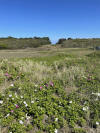 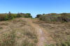 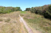 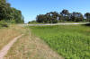 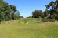 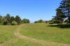 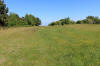 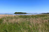


Die obige Bilderstrecke betrachtet den Verlauf des Kanals vom westlichen Ende in Richtung östliches Ende am Stavns-Fjord.
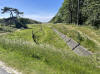 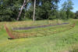 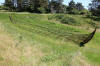 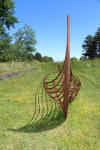 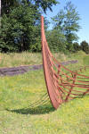 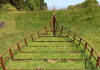 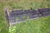


Auf der in der Ostsee gelegenen Insel Samsø, die eine zentrale Lage zwischen Århusbucht und dem Großen Belt einnimmt, finden sich deutliche Spuren der ersten bekannten größeren Wasserbauarbeiten in Dänemark. An der schmalsten Stelle der Insel ist ein ansehnlicher Kanal gegraben worden, der den Stavns-Fjord mit der Mårup Bucht verbindet. Der Kanal war ca. 500 m lang, 11 m breit und ca. 1,25 m tief. Daher war es selbst größeren Schiffen möglich ihn zu passieren. Der Ort heißt Kanhave, und das bedeutet einfach: "Die Stelle an der man Schiffe hinüber gezogen hat". Er ermöglichte die schnelle Verlagerung der Flotte von der einen zur anderen Seite der Insel.
Die früheste Erwähnung des Kanhave Kanals findet sich 1758 bei Hofbaumeister Laurids de Thurah (*04.03.1706 - 06.09.1759, dänischer Architekt, Baumeister, Architekturhistoriker und Topograf)
 Bildquelle:
Wikimedia - Lizenz:
Public Domain
Bildquelle:
Wikimedia - Lizenz:
Public Domain
auf der S. 37 in seinem Werk "Omstændelig og Tilforladelig Beskrivelse af Øen Samsøe" - Übersetzung: Detaillierte und zuverlässige Beschreibung der Insel Samsøe.
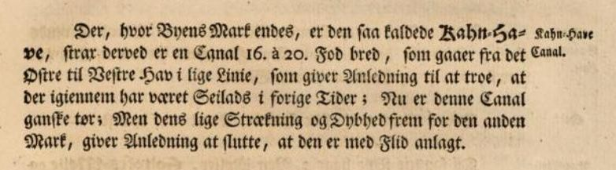
Google ScanÜbersetzung: "... Wo die Heide endet, befindet sich eine Steinzaun namens Kahn-Have, der den südlichen und nördlichen Teil des Landes voneinander trennt. Unmittelbar daneben befindet sich ein Kanal von 16 mal 20 Fuß Breite, der vom östlichen zum westlichen Meer in einer geraden Linie verläuft, was Anlass zu der Annahme gibt, dass früher durch ihn gesegelt wurde; Jetzt ist dieser Kanal ziemlich trocken; Aber seine im Vergleich zum anderen Feld gleiche Länge und Tiefe lässt darauf schließen, dass es mit Sorgfalt angelegt wurde "
Auf den Seiten der Digitalen Sammlung der Königlichen Bibliothek in Kopenhagen findet man die darin befindliche Karte von 1755 - 38 cm x 48 cm - Frei von Urheberrechten - die in dem Buch am Anfang vor dem Text eingebunden ist.
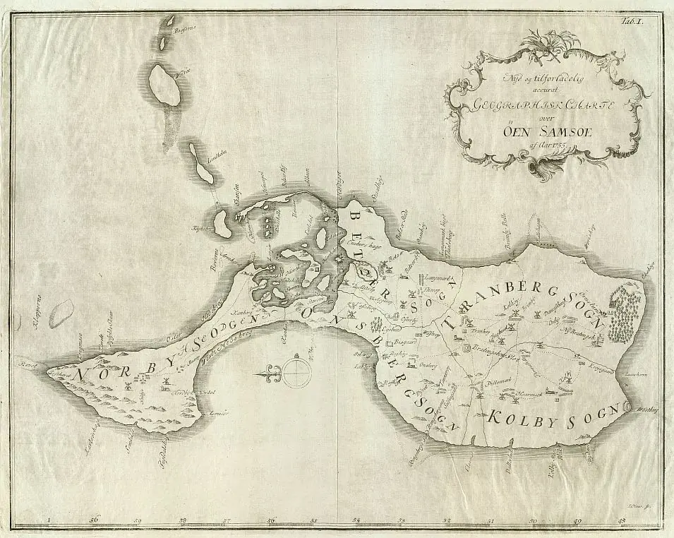
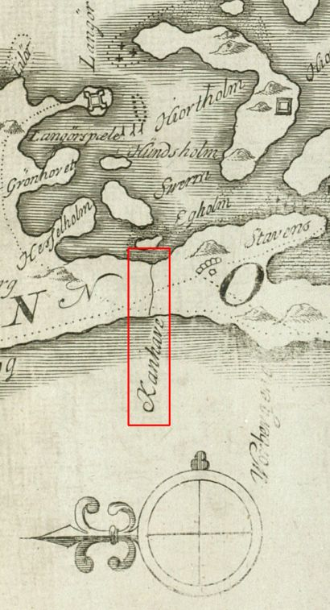
Die erste Vermessung des Kanhave Kanal erfolgte 1960 aufgrund einer Straßenumleitung der Kreisstraße nach Nordby. Hier wurde erstmals festgestellt, dass der Kanal künstlich angelegt und kein natürlicher Bach war. Basierend auf dieser Entdeckung wurden 1977 und 1979 kleinere Studien durchgeführt. Im Jahr 1995 wurde ein Querschnitt des Kanals ausgehoben, der ein klares Bild des Bauwerks vermittelte.
Zwischen 1960 und 1995
fanden insgesamt vier archäologische Ausgrabungen an dem Kanal
statt. Er ist an den Seiten mit einer Plankenverkleidung bestehend aus 2-4
horizontalen Planken versehen. Die Planken wurden mit langen Holzpflöcken und
schweren, sich verjüngenden Pfosten befestigt. Die Planken waren
zwischen
2,5 m und 4 m lang und größtenteils aus Eichenholz gefertigt.
Entlang des Kanals befand sich eine Böschung aus Gras und Heidekraut. Zwischen
der Böschung und dem Kanal lag ca. 1m, so dass die Möglichkeit
eines Geh- oder Treidelweges entlang des Kanals bestand. Noch heute kann man den
Kanal von einem Ende zum anderen entlang laufen.
Bei der Ausgrabung im
Jahr 1960 wurde die erste Datierung des
Kanhave
Kanal durchgeführt. Eine
Kohlenstoff-14-Analyse des erfassten Holzes datierte den
Bau des Kanals auf das
Jahr 800 +/- 100 Jahre. Später zeigte eine Jahresringdatierung der Planken (Dendrochronologische
Untersuchung), dass das Holz von den Seiten des Kanals von Bäumen
stammte, die im Jahr 726 n. Chr. gefällt wurden. Der Kanal
wurde bis mindestens in die 750er Jahre in Stand gehalten
(dendrodatierte Reparaturphasen zwischen 741 und 759 n.
Chr.) und nach C14-Daten aus der Verfüllung um
800 aufgegeben. Obwohl er seit Tausenden von
Jahren nicht mehr genutzt wurde, ist sein Einfluss auf die Landschaft noch immer
sehr deutlich.
Nach den Ergebnissen der neuesten Ausgrabungen im Jahr 1995 - 18-tägige Ausgrabung ab dem 14. August 1995 - wurde der Kanal kurz nach seinem Bau durch Zuschütten nach Westen gesperrt, vermutlich um feindliche Schiffe fernzuhalten. Ob der Kanal danach nochmals geöffnet wurde, ist ungewiss, aber es steht fest, dass man die zähen Bemühungen, ihn gegen die aktive Ausgleichsküste der Mårup Bucht offen zu halten, später aufgab. Man hat sicher statt dessen eine feste Schleppbahn aus Holz eingerichtet, über die die Schiffe im Kanal mit Hilfe der Besatzungen, Sklaven, Pferden oder Ochsen gezogen werden konnten.
Ob es ein früher dänischer König war, der den Kanal und die Befestigung als Teil der Reichseinigung anlegen ließ, oder ob es ein ortsansässiger Herrscher war, kann nicht gesagt werden. Es ist auch nicht sicher wie lange die Anlage genutzt wurde, aber das Vorhandensein eines Snekke-Namens in der Nähe könnte darauf hindeuten, dass sie bis ins 12. Jahrhundert hinein Teil des Marineverteidigungssystems des Landes war. Fest steht aber, dass der Kanhave Kanal eine der beeindruckendsten Spuren der Wikingerzeit in Dänemark ist.
Quelle zu diesen Angaben: https://www.visitsamsoe.dk/de/inspiration/kanhave-kanalen/
Ein weiterer, sehr interessanter Artikel zum Kanhave Kanal in deutscher Sprach findet sich hier. Es handelt sich um einen Beitrag innerhalb von "Fossata Magna Kanäle des 1. Jahrtausends n. Chr. und ihr Erkenntnispotential für die Hafenforschung" - Fallstudie 2 - ab S. 67 ff..
Reichlich bebildert und mit allen erdenklichen Infos gefüttert ist diese in dänischer Sprache gehaltene Abhandlung zum Kanhave Kanal aus der Reihe "Danske Fortidsminder". Auch ein Videointerview mit Museumsinspektorin Lis Nymark ist dort eingebettet.
Eine Webseite vom Kulturministerium zum Kanhave Kanal findet sich hier. Dort sieht am eine Zeichnung von Sune Elskær wie es am Kanhave Kanal zur Wikingerzeit einmal ausgesehen haben könnte, dazu kommt ein Luftfoto und noch ein Foto der inzwischen vor Ort - zwischen den beiden Straßen gelegen - rekonstruierten Kanalwandbeplankung mit einer Wikingerschiffs Silhouette aus Cortenstahl. Dies wurde am 17.09.2015 eingeweiht (Video von TV2 Østjylland), wobei das Ladbyschiff im Hinblick auf die Abmessungen 1:1 Pate stand. Über diesen Link finden sich dazu einige Fotos. In dem Bereich wurden auch mehrere Infotafel aufgestellt (Gestaltung - siehe erste Verlinkung auf dieser Seite).
Der entsprechende Eintrag in "Fund og Fortidsminder" ist hier verlinkt.
Dieses Luftfoto ist von Skråfoto - Skråfoto ist eine Webanwendung, die von "Klimadatastyrelsen" weltweit kostenlos bereitgestellt wird - Freie Nutzung unter Beachtung der Lizenz: CC BY 4.0 - Aufnahmedatum 19.04.2023 (Download 28.09.2025) . Die Entfernungsmessung ist in der Anwendung Skråfoto möglich.
Über diese Webseite wird nach Eingabe der Anschrift die Örtlichkeit mit mehreren Schräg-Aufnahmen aus den vier verschiedenen Himmelsrichtungen und einer Senkrechtaufnahme wiedergegeben. Die Bilder stammen aus den Jahren 2017/2019/2021/2023 und werden zukünftig alle 2 Jahre erneuert.
Oberhalb der Straßengabelung - etwa mittig im Bild - wurde die bereits oben angesprochene rekonstruierte Kanalwandbeplankung mit der Silhouette eines Wikingerschiffs aus Cortenstahl errichtet - hier ein Detailausschnitt. Da kann man sehr leicht erkennen, dass das die mit Abstand detailgenauesten Luftfotos (für Dänemark) sind, die es im Internet gibt - Google Maps / krak.dk usw. kommen da nicht mit!
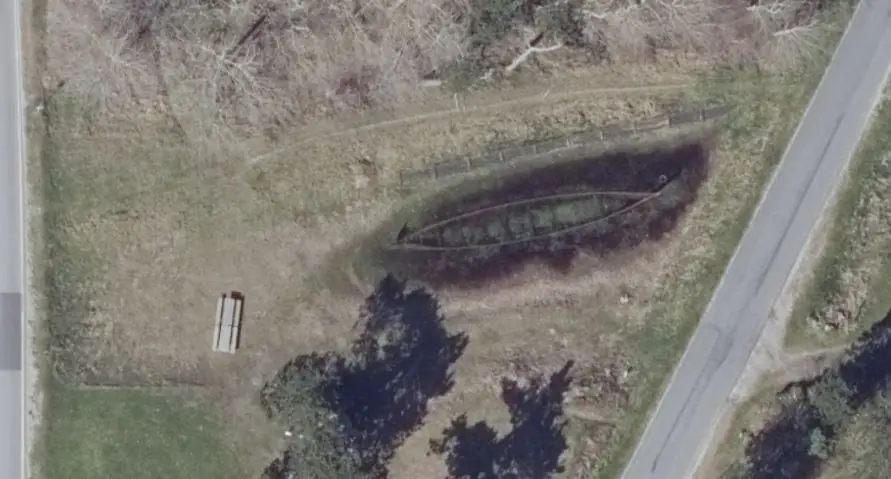
Literaturhinweise:
Nørgård Jørgensen, Anne - The Kanhave Canal on Samsø new investigations. In: Château Galliard XVIII. Études de castellologie médiévale. Actes Du Colloque International Tenu À Gilleleje (Danemark) 24-30 Août 1996. Université de Caen 1998. (S. 153-158).
Nørgård Jørgensen, Anne - Kanhave-Kanal - in: Reallexikon der Germanischen Altertumskunde - Band 16 - 2000 - S. 221-222
Nørgård Jørgensen, Anne - Maritime warefare in Northern Europe. Technology, organisation, logistics and administration 500 BC - 1500 AD. Studies in archaeology & history 6 - Copenhagen 2002